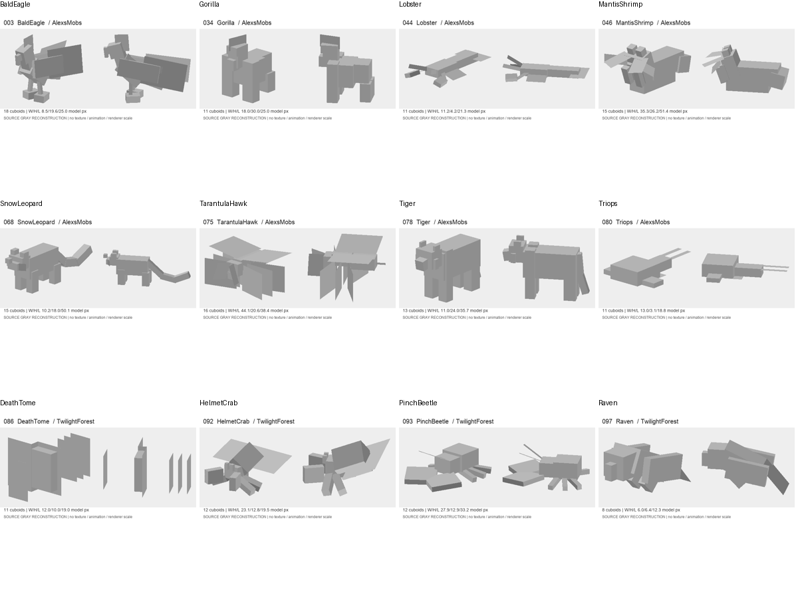
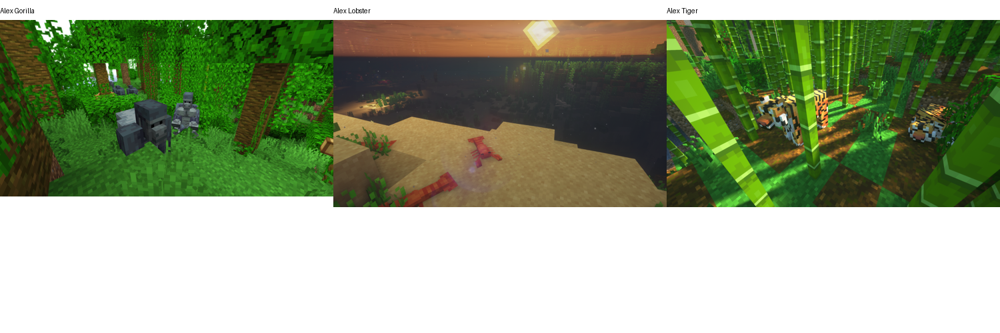

12个暮色森林/Alex模型结构重建，核对Gorilla、BaldEagle、Lobster、HelmetCrab、DeathTome源码，另查看Alex作者Gorilla/Lobster/Tiger游戏展示。作者截图可能有光影，只用于构造与部位关系；未作为无光照PNG效果。


AlexsMobs: BaldEagle — 源码绑定姿态，不能替代完整动画研究。
AlexsMobs: Gorilla — 源码绑定姿态，不能替代完整动画研究。
AlexsMobs: Lobster — 源码绑定姿态，不能替代完整动画研究。
AlexsMobs: MantisShrimp — 源码绑定姿态，不能替代完整动画研究。
AlexsMobs: SnowLeopard — 源码绑定姿态，不能替代完整动画研究。
AlexsMobs: TarantulaHawk — 源码绑定姿态，不能替代完整动画研究。
AlexsMobs: Tiger — 源码绑定姿态，不能替代完整动画研究。
AlexsMobs: Triops — 源码绑定姿态，不能替代完整动画研究。
TwilightForest: DeathTome — 源码绑定姿态，不能替代完整动画研究。
TwilightForest: HelmetCrab — 源码绑定姿态，不能替代完整动画研究。
TwilightForest: PinchBeetle — 源码绑定姿态，不能替代完整动画研究。
TwilightForest: Raven — 源码绑定姿态，不能替代完整动画研究。
用户要求的100个主流整合包/1000个不同非人形生物尚未完成逐项图像研究。候选包检索不等于参考过其中的生物；不将宝可梦、同一生物多包收录或未查看资产补入计数。
返回模型